Product manager turning complex B2B and AI problems into products people rely on.
Purdue MEM student with four years shipping B2B and AI products — from Carrier's financial planning platform to GenAI systems at Trane, Cummins, and ISE. I start with users, partner with engineers, and make sure it delivers.
Curious builder, clarity-obsessed collaborator, happiest when fuzzy problems turn into products people use.
A builder at heart. A curious learner always.
I'm a Master of Engineering Management student at Purdue with four years of product experience across B2B platforms and AI. At Carrier, I owned a financial and regulatory planning platform end to end and became the youngest recipient of the company's Leadership Award. Since then, I've built AI products and use cases at Trane, Cummins, and ISE — from competitor intelligence tools to enterprise data pipelines to industrial fault detection.
I start with what users really need, work closely with engineers to build it, and make sure it delivers. Outside of work, I build my own AI workflows and ship small tools to learn new technologies. I'm looking for product roles where AI meets real business problems.
I'm happiest around people who care about what they're creating — swapping perspectives, making sense of ideas together, and watching something go from “what if?” to “this actually works.”
Professional Experience
A roadmap of where I've studied and worked. Tap a stop for the full story.
🎓
B.Tech, Computer Science
JNTU Hyderabad
Tap for details
Jul 2018 – Jul 2022 · GPA 3.9/4.0
G. Narayanamma Institute of Technology & Science (GNITS). Student Coordinator at Indian Society of Technical Education. Software Developer Intern at Intrinsic Science Labs.
2018–22
2021–22
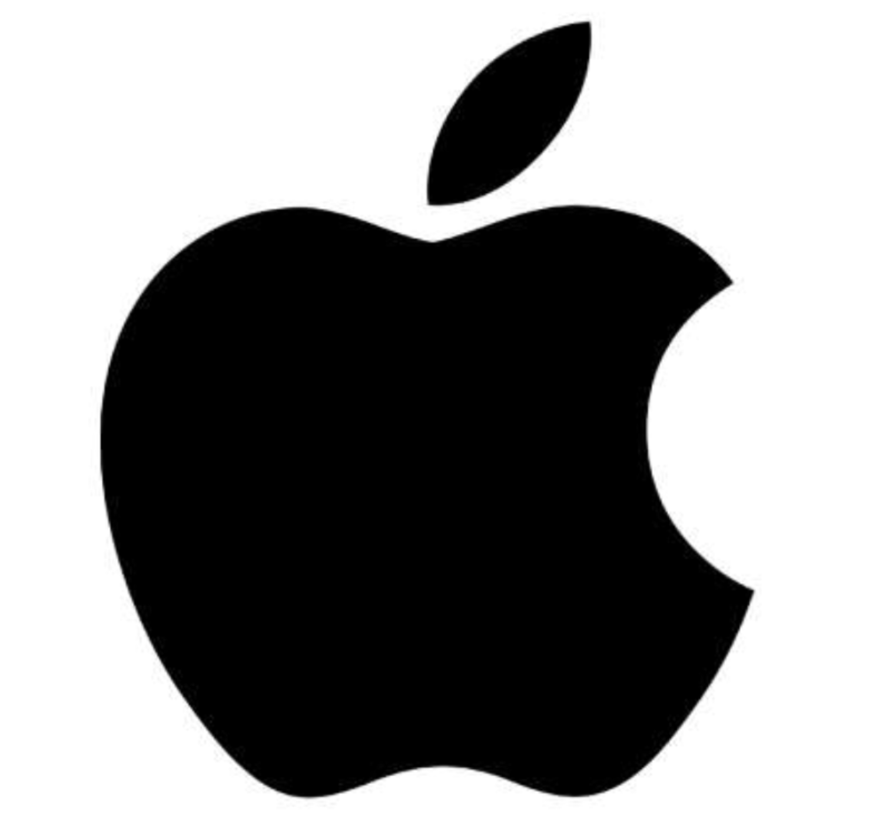
Project Intern
Apple
Tap for details
Sep 2021 – Jun 2022 · Hyderabad, India
Conducted 17 customer interviews to surface unmet vendor needs, synthesizing insights into a prioritized backlog that shipped Local Vendor Connect, serving 100+ vendors.
Proposed Apple Maps integration with a technical feasibility analysis, partnering with engineering to validate scope and usability.
Owned end to end SDLC of STRAT, an AWS platform modeling financial and regulatory scenarios from SAP ERP and Snowflake, aligning sales, engineering, and design by mapping stakeholder workflows, saving $770K and driving 12x throughput on a $20B portfolio.
Defined requirements and acceptance criteria for AWS ETL pipelines (EC2, S3, Lambda, Docker) preserving data integrity and lineage across Snowflake and other sources, eliminating 4 critical bottlenecks and cutting processing time from 11 weeks to 4.
Engineering Leadership Program (ELP) Associate: Three global 8-month rotations
Scaled a residential ML pipeline (training and inference) from 50 to 9,000 networked ESP32 IoT edge devices by re-platforming .NET to Python with concurrent processing on AWS EC2/S3, driving an 11% forecasting accuracy gain and a 23% energy cost savings target.
Quantified $1.8M in at-risk assets and a 10% efficiency pathway by partnering with data scientists to profile over 6 months of 5-minute DCIM telemetry across 16 rooms in 4 data centers via a cloud-deployed Plotly Dash dashboard.
Award: Youngest recipient of Carrier's Leadership Award (Top 1%) for excellence in product delivery.
2022–25
2026–27
Master of Engineering Management
Purdue University
Tap for details
Jan 2026 – Dec 2027 · GPA 4.0/4.0
Specialized coursework in Product Management, Agile Project Management, Business Analytics, Strategic Management, and Brand Management. Active member of American Society for Engineering Management (ASEM).
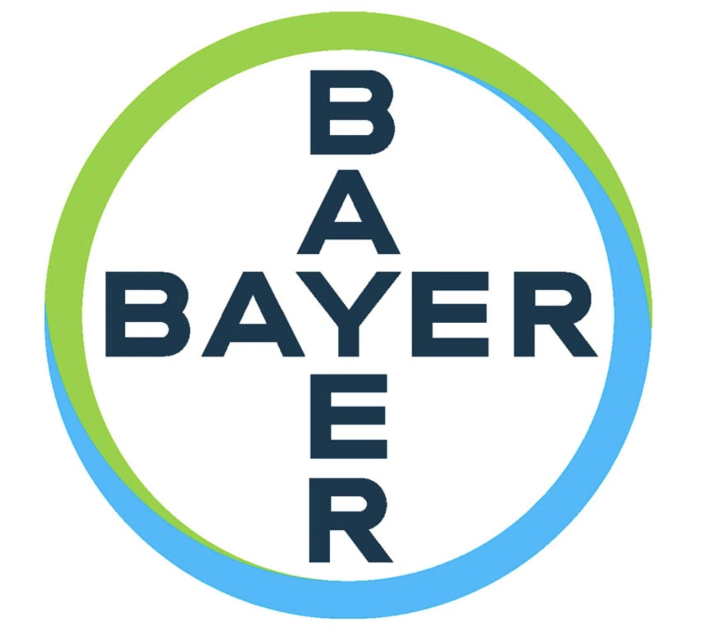
Go-to-Market Strategist
Bayer
Tap for details
Jan 2026 – May 2026 · LoriComunica (AAC App)
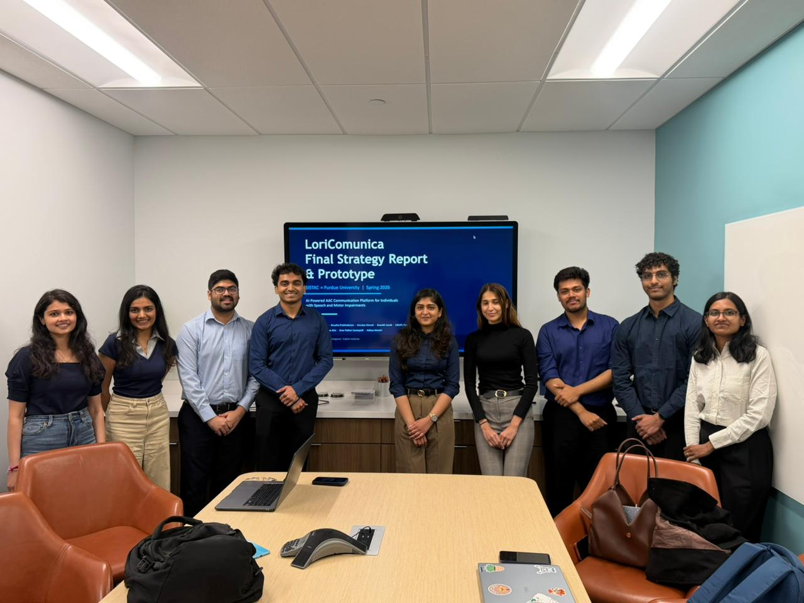
Led competitor analysis, A/B testing, and pricing strategy for LoriComunica, driving a B2B/B2G go-to-market shift.
The new prototype was adopted by 6 clinics, with 95% of users preferring it over the existing app.
Jan '26
Jan '26
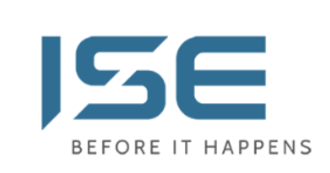
AI Program & Data Associate
ISE
Tap for details
Jan 2026 – May 2026 · West Lafayette, IN
Reached 100% fault detection and 75% expert agreement across 200+ industrial assets by directing the ML lifecycle (labeling, training, statistical evaluation) of a fault classification system combining CNN, digital twin, and signal processing.
Compressed inspection time 95% (5 hours to 15 minutes) across 3 live production deployments and presented a $76K annual savings ROI business case to C-suite leadership.
AI Product Intern
Trane Technologies
Tap for details
May 2026 – Aug 2026 · Davidson, NC
Prioritized and roadmapped 21 GenAI use cases via value stream mapping across 6 sustainability workstreams, orchestrating delivery for 7 implementation plans including retrieval architecture, eval criteria, and AI guardrails, cutting manual effort 86% (2,000+ hours a year).
Partnered with marketing to translate stakeholder and investor feedback into an LLM powered competitor tracking system spanning 23 peers and 12 raters, collapsing a month long benchmarking process into 1 hour, including SWOT and gap analysis for competitive positioning.
May '26
Aug '26
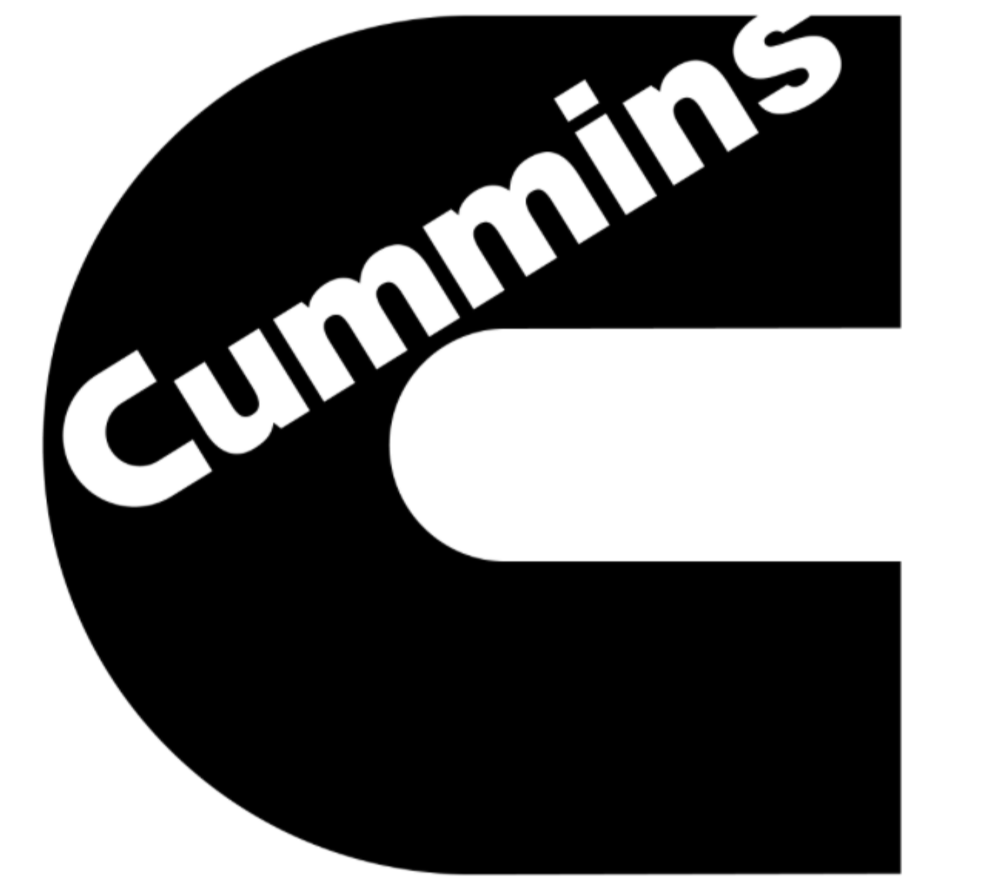
Technical Program Manager
Cummins
Tap for details
Aug 2026 – Dec 2026 · West Lafayette, IN
Leading a 16 member cross functional team across 3 AI use cases, running sprints, demos, and research updates, and automating data dictionaries and schema impact analysis on Snowflake Cortex across 350+ dbt ELT pipelines, targeting 80 to 90% cost savings.
Driving delivery of a persistent memory framework (session, episodic, semantic) for a supply chain chatbot on LangGraph and Mosaic AI Vector Search, tracking eval milestones and compute risks in leadership reports, projected to deliver 30 to 40% faster agent development.
Pinned Up
The Board
Projects I've built and things I've written, pinned up. Tap any project for the full case study.
Projects (6)
🤖
Sentinel
AI Market Intelligence Platform
Tap for full story
Personal Project · Jul 2026 – Present
Engineering a market intelligence engine (n8n, Claude API, multi-agent via MCP) automating competitive intelligence and secondary market research, replacing manual company research with ranked, RAG-verified ICP matching to inform strategic planning.
Multi-Agent SystemsMCPRAGAgentic AI
👵
Grandmode
Consumer Practice App for Older Adults
Tap for full story
Sep 2026 – Present
Conducted 10 user interviews with older adults (ages 69 to 75) on everyday consumer app use, synthesizing insights via affinity and customer journey mapping into 2 core jobs-to-be-done, then ideated 60+ solution concepts across UX, fraud prevention, and authentication.
User ResearchJTBDCustomer-Facing Apps
🏠
Lodge
1st Place, MEMPC Hackathon 2026
Tap for full story
Purdue University | Inter-College Hackathon · April 2026
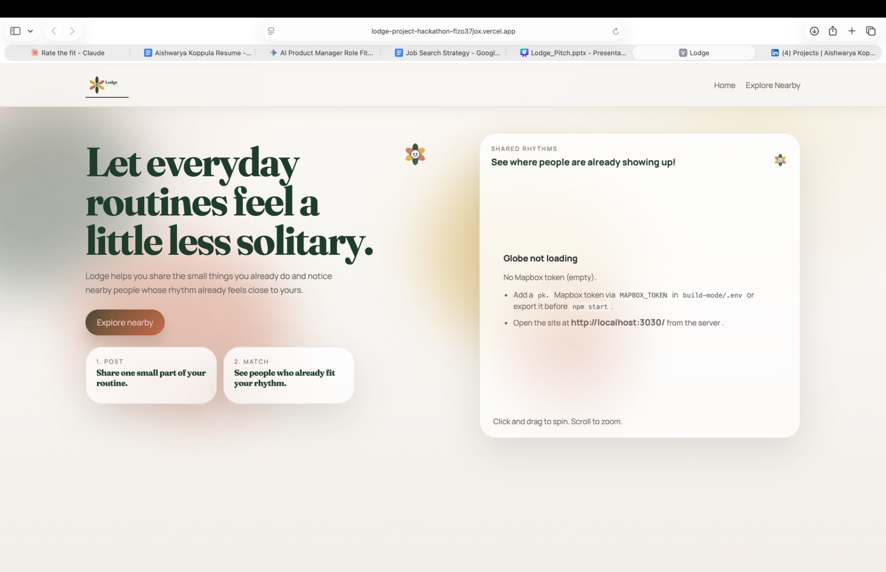
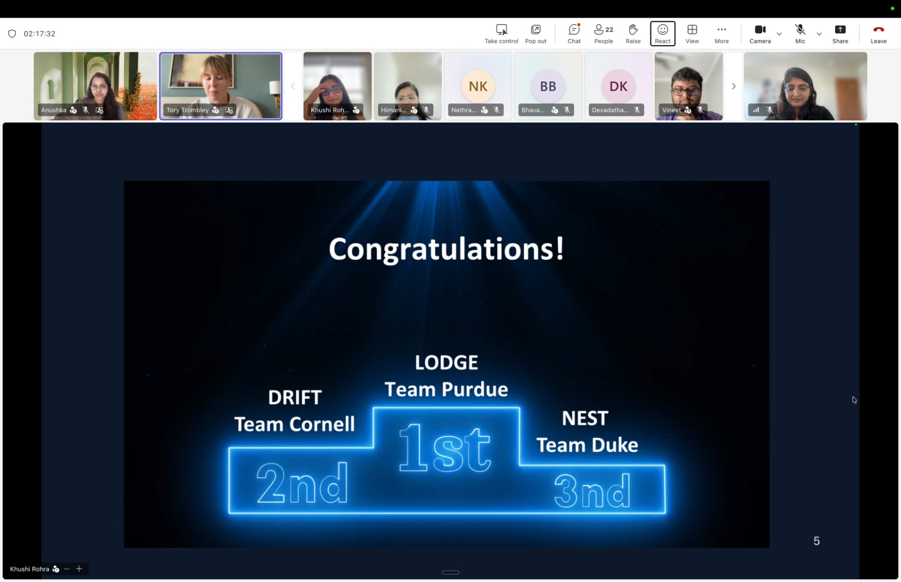
Shipped a production-ready behavioral matching engine from ideation to launch in 48 hours using Claude Code and Cursor, pairing 50+ live users on routine proximity and using the GPT-4.1 mini API to flag disengagement.
Reduced irrelevant outputs 45% across 200+ syllabi through systematic LLM evaluation, building an agentic RAG powered knowledge graph with dual 2D/3D rendering to map concept dependencies and surface root cause.
React 18FirebaseOpenAI APIThree.jsVercel
🔗
Agentic Briefing Pipeline
Personal Project
Tap for full story
Feb 2026 - Mar 2026
Engineered a low code, no code n8n workflow with calendar and meeting tool integrations, using Claude API prompt engineering to centralize meeting notes, cutting retrieval time 80% with sub second latency.
Carrier Innovation Competition - 4th Place Globally (84 Teams) · Apr 2023 - Jun 2023
Led a 4-person team to build an integrated HVAC optimization, renewable integration, and load management solution, winning 4th and pitching a $4.7B market opportunity to the VP of Innovation.
Product InnovationTeam LeadershipGo-to-Market
Writing & Research (2)
📖
Air and Sound Pollution Tracking Using IoT and Machine Learning
Published by CRC Press / Taylor & Francis
Tap for details
2024
Spearheaded research project developing an IoT and machine learning-based system for real-time monitoring of air and noise pollution. Led ML model training, data analysis, and integration with mobile app interfaces. Co-authors: K. Aishwarya, R. Christina, Y. Priya Amrutha.
Comprehensive training in data science project execution and analysis techniques.
Awards & Recognition (5)
1st Place, MEMPC Inter-College Hackathon
Purdue University · April 2026
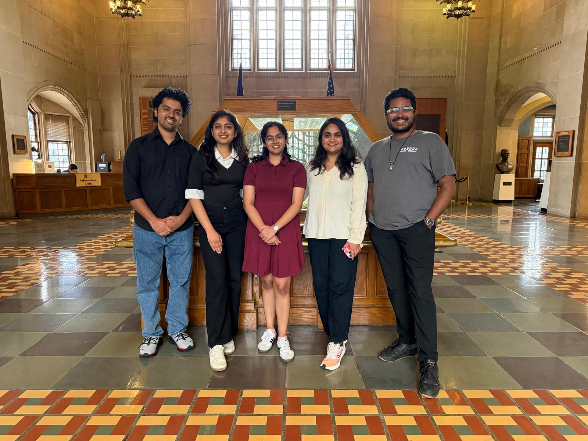
Won first place with Lodge, a social infrastructure platform, beating teams from Cornell, Duke, and five other top programs. Led product strategy and shipped a production-ready MVP pairing 50+ live users in 48 hours using Claude Code and Cursor.
Carrier Technologies India · Youngest Recipient (Top 1%)
Youngest recipient of Carrier's Leadership Award, typically awarded to Senior Product Managers. Recognized for exceptional leadership and driving product innovation.
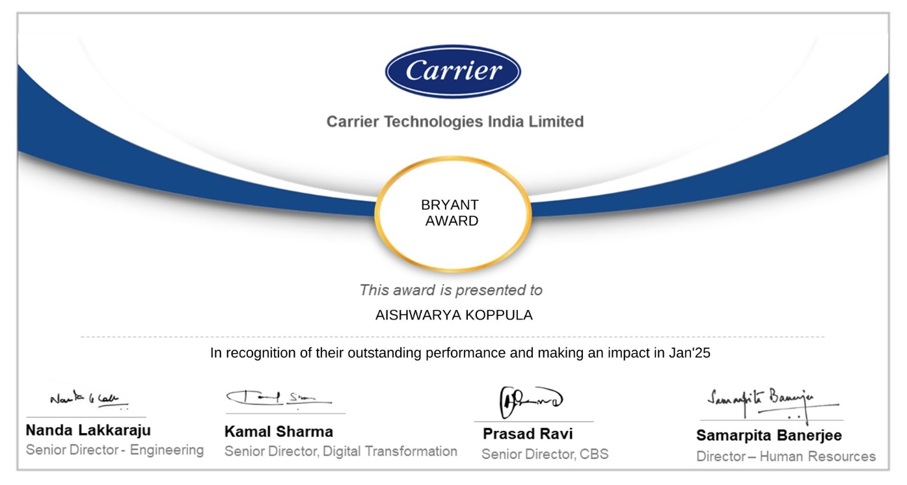
Bryant Award
Carrier Technologies India · 2025
Recognized for outstanding performance and making significant impact through exceptional contributions to engineering excellence.
🏅
Titan Award & 3x Spot Awards
Carrier Technologies India · 2022-2025
Multiple recognitions for exceptional performance, innovation, and contributions to product development and team success.
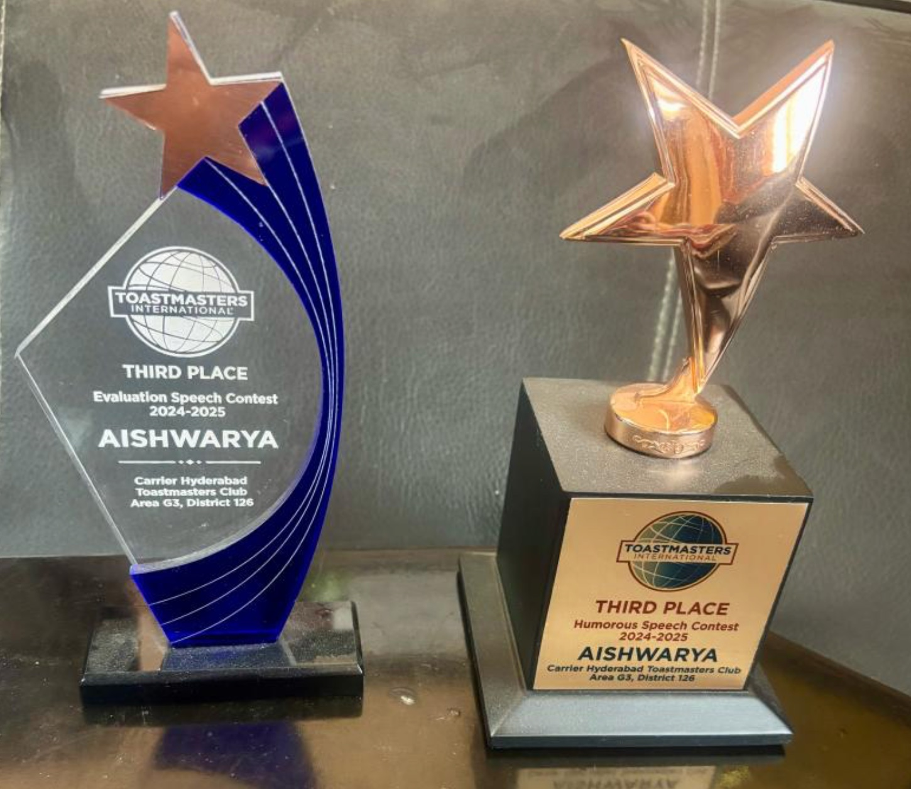
Toastmasters Speech Contests
Toastmasters International · 2024-2025
Third place in Evaluation Speech Contest and Humorous Speech Contest at Carrier Hyderabad Toastmasters Club, Area G3, District 126.
Affiliations (5)
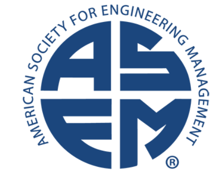
American Society for Engineering Management
Student Member · Active Member
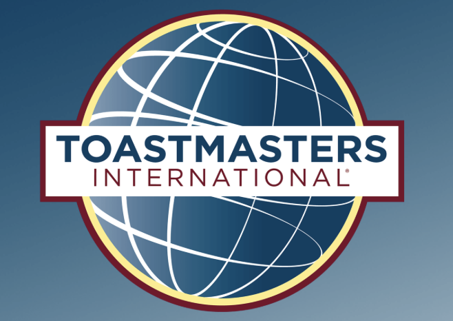
Toastmasters International
VP Public Relations · Sep 2024 - Sep 2025
Carrier Hyderabad Toastmasters Club.
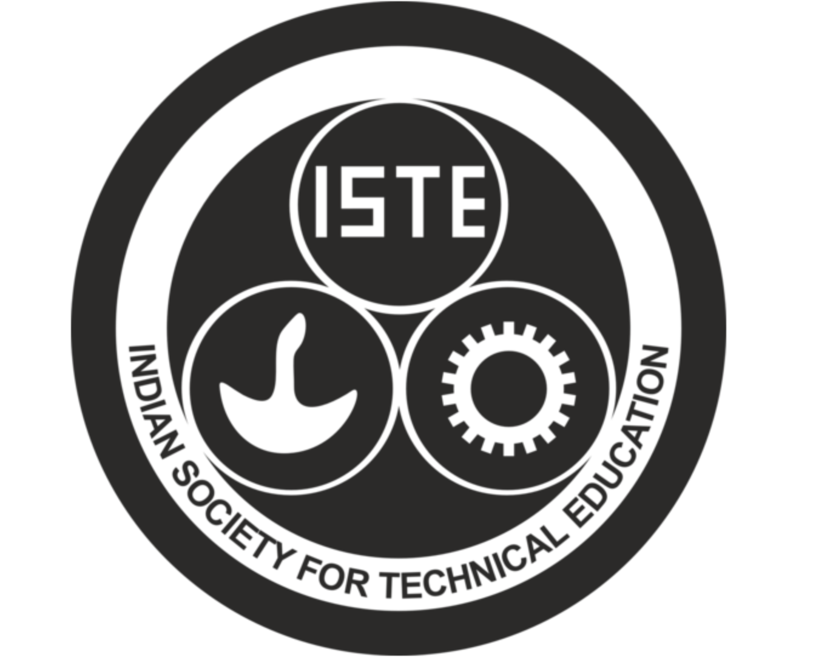
Indian Society for Technical Education
Student Coordinator · Jul 2019 - Jun 2022
Led coordination between student committees and faculty advisors. Organized IGNIUM2K20, a 500+ participant inter-college technical fest.
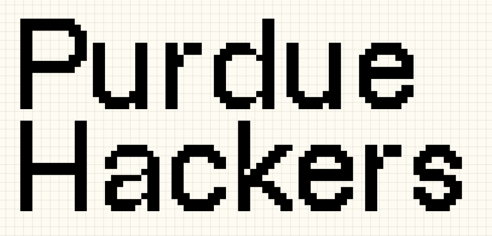
Purdue Hackers
Purdue University · Member
💼
Women in Consulting
Purdue University · Member
Along The Way
A Few Moments
Some faces and places behind the resume.
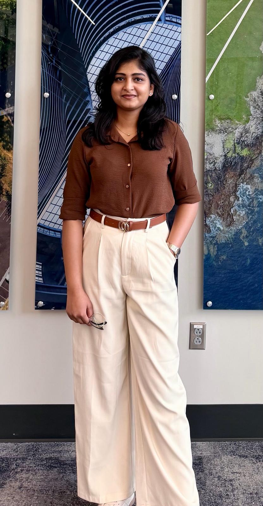
Get In Touch
Let's Connect
I'm always open to discussing product management opportunities, engineering leadership, research collaborations, or just connecting with fellow professionals.
What brings you here? Any of these opens an email to me.
Aishwarya
Koppula.
I'm Aishwarya.
Professional Experience

- Conducted 17 customer interviews to surface unmet vendor needs, synthesizing insights into a prioritized backlog that shipped Local Vendor Connect, serving 100+ vendors.
- Proposed Apple Maps integration with a technical feasibility analysis, partnering with engineering to validate scope and usability.
📄 View Certificate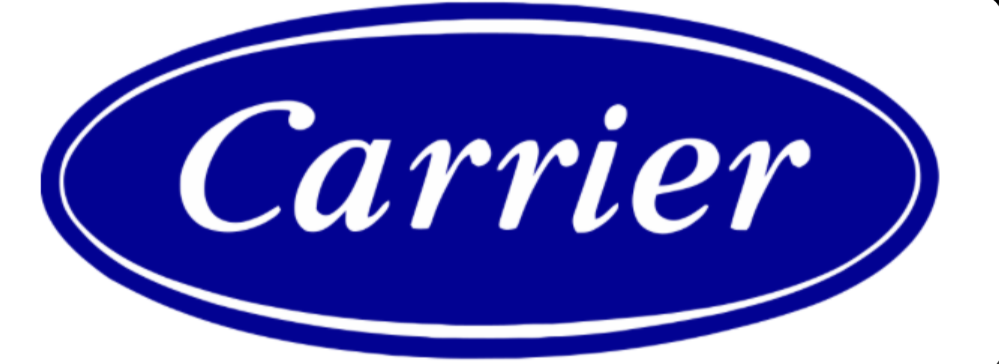




The Board
Sentinel
Grandmode
Lodge


Claro
Agentic Briefing Pipeline
WattWise
Air and Sound Pollution Tracking Using IoT and Machine Learning
How Plotly Dash Became My Go-To for Data Visualization
Credentials & Recognition
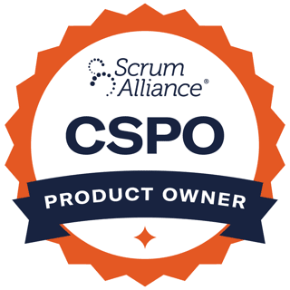
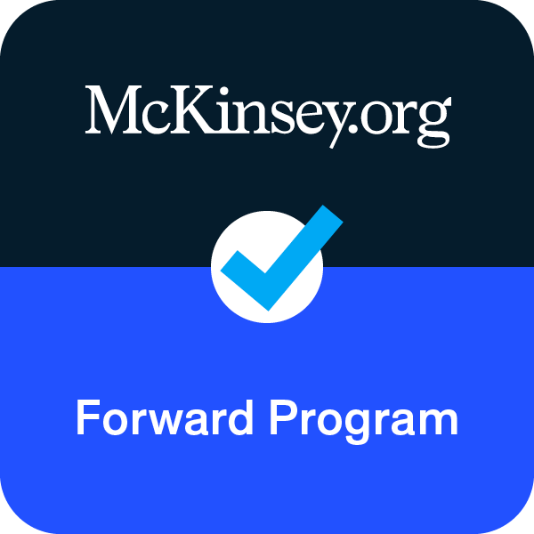

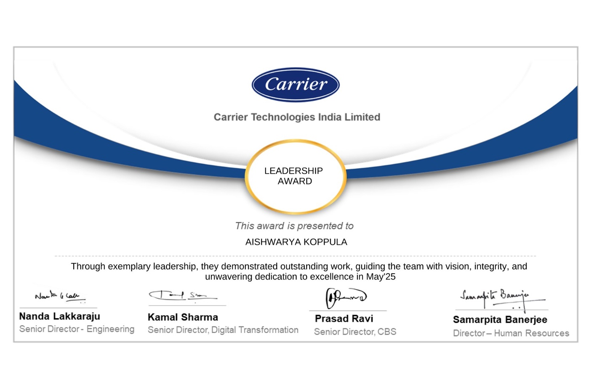






A Few Moments

Let's Connect
The problem
What I did
Outcome
Built with